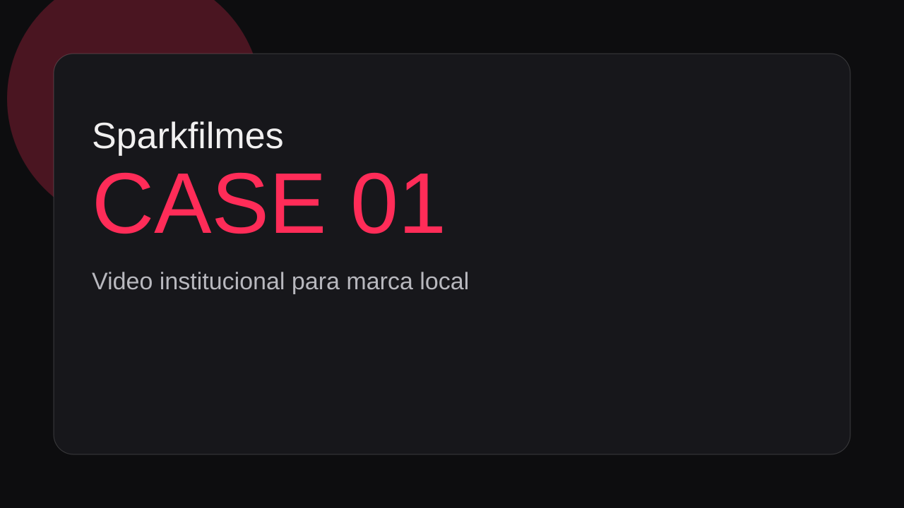
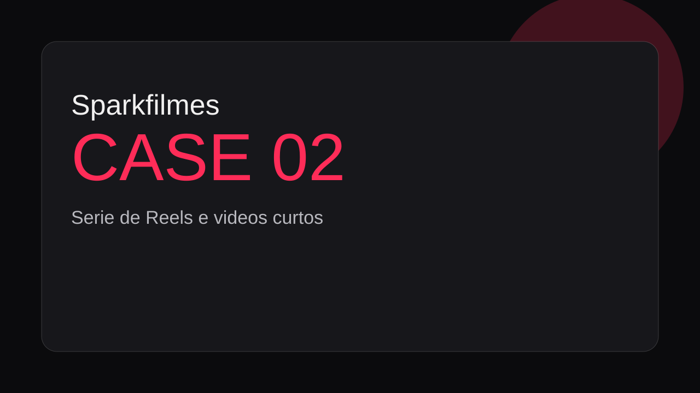
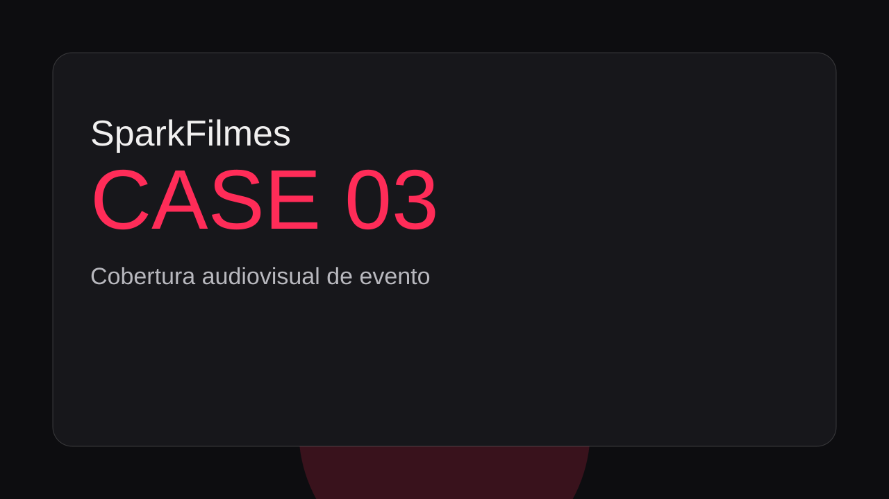

Posicionamento claro
Cada projeto nasce da pergunta: "qual mensagem essa marca precisa sustentar no mercado?". So depois disso decidimos roteiro, linguagem e formato.
Producao audiovisual estrategica
Conteudo amador passa uma mensagem silenciosa: "essa empresa ainda nao esta pronta". Na Sparkfilmes, a producao e pensada para posicionar, construir confianca e atrair clientes melhores.
Orcamento sem compromisso. Atendimento via WhatsApp.
Quem somos
Cada projeto nasce da pergunta: "qual mensagem essa marca precisa sustentar no mercado?". So depois disso decidimos roteiro, linguagem e formato.
Trabalhamos para que o visual e o discurso andem juntos. Resultado: comunicacao mais profissional e percepcao mais forte de competencia.
Servicos
Diarias planejadas para manter seu calendario ativo sem improviso na gravacao.
Apresentacao clara da empresa para transmitir consistencia, cultura e confianca.
Reels, shorts e cortes com foco em comunicacao objetiva e ritmo de publicacao.
Registros estrategicos para prolongar o impacto do evento nos seus canais.
Como funciona
Entendimento de publico, oferta, objetivos e prioridades comerciais.
Definicao de pautas, formatos e cronograma de captacao.
Direcao de cena para garantir clareza de mensagem e boa performance de camera.
Arquivos organizados para publicacao e uso comercial imediato.
Por que Sparkfilmes
Portfolio

Apresentacao de empresa para gerar confianca antes da reuniao comercial.

Conteudo em lote para manter constancia e reforcar mensagem de marca.

Registro e desdobramentos para ampliar o alcance apos o evento.
Substitua os placeholders pelos cases reais na pasta assets/img/placeholders.
FAQ
Atendemos negocios locais, especialistas e empresas em crescimento que precisam comunicar melhor.
Planejamos diarias mensais, definimos pautas por bloco e organizamos as entregas por projeto.
O prazo varia com volume e complexidade, mas cada entrega tem previsao alinhada no briefing.
Os arquivos ficam no Google Drive e o portal da Sparkfilmes organiza o acesso por cliente e diaria.
Atendimento direto com a equipe Sparkfilmes.